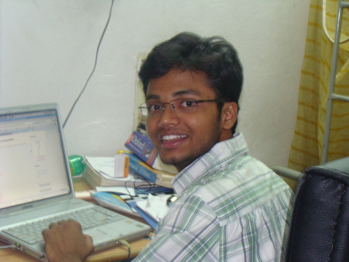

The Yearbook - Commemorating 2005-09!
Siva Reddy's profile information
Name - Siva ReddyBirthday - Sept 5th
Email - gvs.iiit@gmail.com
Address - Vissannapet, Krishna Dist
Phone - 9290440928
Hobbies - Browsing, movies, BC
WishList - Amrita Rao :)
Memorabilia - Many.. may be my bday.
What would you want to be remembered as - Your SivaReddy. Call me for any help. You won't regret it.
Future Plans - Fashion Technology :P
Testimonials written by Siva Reddy
Siva Reddy's Album

{kind=link}
Default caption
Testimonials
Randeep Singh Banga wrote-As Siva has mentioned in his profile, I indeed would remember him as 'Our SivaReddy. You Call him for any help. You won't regret it.' Each and every word of it is true....i've experienced it at d time of placements...i would call him late nights asking for sm work or other to b done and tht too at very short notice...i would thn sleep and d next day i would find d work perfectly done before i reach d venue....hats off to u Siva

he's a very nice person to talk to...very cheerful...very friendly and yes a studious guy...but Siva I foresee a great friend in you, so u hv to live up to tht...i'm here in Gachibowli ur neighbour...u do plan to drop by frequently at M$...it will b fun man...

Prateek G V wrote-
If by any chance the shakti machine in LTRC wing gets damanged, they will replace it with Shiva Reddy - the Shaktimaan of IIIT-H.
 Came to know more about him through YV Sandeep. Both were/are/will be certified geeks working on some hacking tricks, reading some tech blogs and linux freaks. He helps everyone/anyone anytime without expecting any kind of favor from the other side. Has been very helpful during the first phase of placements when there was a shortage of volunteers. I am sure lots in store for you in IIIT Hyderabad and one day you will surely be a well known researcher. Be the same.
Came to know more about him through YV Sandeep. Both were/are/will be certified geeks working on some hacking tricks, reading some tech blogs and linux freaks. He helps everyone/anyone anytime without expecting any kind of favor from the other side. Has been very helpful during the first phase of placements when there was a shortage of volunteers. I am sure lots in store for you in IIIT Hyderabad and one day you will surely be a well known researcher. Be the same.
Good luck!
Anupama Gali wrote-
Lord Siva!

pawan kalyan laga eppudu egurutoone untadu..
kasi kasi ani vinna kanee aa "kasi" to paatu *romanticity* kuda ekkuve!
Ekkuva teleedu kabatti emi rayalekapotunna kshamincheseyyi!
Hoping to know you more in the coming year!
Srsly,We all think you look very smart

Bharat Ram Ambati wrote-
Kasi na ko gadu. Eppudu edo okati explore chesthuntadu... manchodu. linuxlo ye prob aina vorpuga solve chesi pedathadu. veediki soma paulki vunna avinabhava sambandham cheppalenidi. LTRClo prathi prof. kalavarinche muddu bidda...
Ee madye G3 ganglo cheri Dominating Gga ghanatha sadisthunnadu...
Inka challe mama. inko year vuntam apudu kummukundam...
Vamshi Velagapuri wrote-
mama manku time undhi inka..nuvvu elagu ikade prof avuthavu kada..testi em akkarledanipinchidhi naku...
neekante nene mudhu veltha le ikkadanundi..
all the best mari...
nee vam.
Arun M.S.C wrote-
don't miss siva reddy.[
] [] a rocking friend for everyone..
nuvvu edina cheyyagalavu ra.. all the best..
keep in touch..[
]
arun..
Kubera Samrat wrote-
Annagaru linux don. Asalu anni sarlu veedni linux gurinchi edipinchano naake teleedu. andukenemo naa PC lo linux tappa windows panicheyyadu. intha studious ayina veedu IIIT ending days lo andariki oka shock ichadu adi cheppalsina avasaram ledanukunta. Silent killer veedu. Chala manchodu em help kavalanna ventane chestadu. Veediki pillulante chala ishtam daaniki pette tindilo sagam veedu tinna ee patiki manakoka macho man tayarayyevadu. Placements time lo chala help chesadu. Baaga moral support kooda ichadu. Veedu Janga jaan jigris.
Congrats for Google summer of code.
All the best for your future plans.
Sanket Sharma wrote-
Shiva bhai, I could never tell you on face but i have told many about u that you are one of finest person i have ever come across. I am your fan dude. I have hardly seen ppl so helping like you. I still remember when i used to approach for any linux problem and you have never said no to me. Sometimes incidents so small but makes a deeper impact. Then once your laptop was lost and i was very upset wanted to help you out by any means.
Then one incident, despite of MS student his contribution in placements is quite appreciable. I once called him late in the night and asked him to prepare a seating arrangement for placements and stick it outside the rooms early in the morning. And this chap so gladly said 'sanket you need not worry i will do it'. You may not agree but such small things fueled me a lot to work for my batchmates in placements.
Shiva you have inspired many in college and outside college. I hope to keep relations with you life long. be the same dude. there is so much to write but time never allows me to do
 .
.P Sharat Chandra wrote-
Siva Reddy ante LTRC ammaila ki sollu. Gem raa veedu, Gem! Pure Gem. If Abhilash is a fruit on that Banyan tree, this guy is a fuckin' flower on it. All the best raa, in whatever you do.
Deepti wrote-
I,for the first time started talking to him, I guess during placements. He was really very supportive throughout those testing times and especially on the day I got placed. He and Kranthi came to the placement venue for some other reason Looking at how disappointed I was about the absolute mess which was created by the CIQ HRs, they both stuck by me, boosting my completely down morales from 7 till 10:30 in the night, not once leaving by my side. I was and I am even now overwhelmed by the exceedingly sweetness of your heart on that day for being so so supportive. Had it not been yours and Kranthi's support, I would have totally jacked my final round of interview.
Then, Samvedana came into life and through his involvement I got to know more about him.
He is a real nice guy, gem at acads and the one who is really really helpful to all his friends
 . Now that I know a lot of things about him
. Now that I know a lot of things about him  , I give him a lot of tough time, pulling his leg and it is absolute fun talking to him. Yet, he is so humble and simple with a pleasant smile always on his face.
, I give him a lot of tough time, pulling his leg and it is absolute fun talking to him. Yet, he is so humble and simple with a pleasant smile always on his face.
Message for you :<.b> Learn to be more assertive.
Wishing you truck loads of good luck
Prashasti Gupta wrote-
All I knew about him before placements was -"he is a bond"...if ou have a linux problem ...ask Sivareddy...
But during placements I came to know he is a very helpful person
...every morning ...when all of us will be nervous...half slept...he would be there standing with a smile ....
Thanx a lot for being a support for entire batch during placements
He is a LTRC bond too...recently came to know about it
All the Best
Keep in touch
Atul Dwivedi wrote-
He is very nice buddy ... we didn't talk much .. but ... he always keep smiling ..and kept complementing me for many things .. thanks for that dude
Enjoy and have fun in future
MNV Kartheek wrote-
smiling kasi...
Sambhav Jain wrote-
It takes lifetime for god to create such persons, modest hardworking and selflessly helpful
The only expression in his dictionary is Smile
... The first encounter to his excellence was during the Graphics assignment evaluation where I was so taken away  by his work that I was spectacle
by his work that I was spectacle  whether I have done any thing ?? ... But PJN wasn't lucky enough , this grandmaster landed in LTRC and from there started our acquaintance .
whether I have done any thing ?? ... But PJN wasn't lucky enough , this grandmaster landed in LTRC and from there started our acquaintance .
One can always find him in the lab
 and even there he is the most seeked person; if he's not there you'll find people asking "where's shiva ?? have you seen siva?? where's he ???".
and even there he is the most seeked person; if he's not there you'll find people asking "where's shiva ?? have you seen siva?? where's he ???".
Enjoyed pulling his leg
,during Winter school by pairing him with visiting female  scholars ... and why not??? ... he was mentoring a bunch of them
scholars ... and why not??? ... he was mentoring a bunch of them  .
.
Will remember our Lab chit-chats
and giggling .
All the best for your MS !!!
-Sambhav
Himank Sharma wrote-
Siva aka Kasi
Kasi kasi kasi kasi kasi..
He is the geek God of IIIT. Have never see anyone, who is so dedicated towards work. He is also one of the super achievers, many people didnt know him until 3rd year or so. My interaction with him was courtesy B Section when I used to keep bugging this simple guy, disturbing him in the class where he would be trying his best to concentrate and listen to the prof.
He is the leading light of LTRC, he is the fav of Sangal Sir. Sangal Sir at times, even gives him the papers which come to him for reviewing.
He always greets you with a smile on his face
I am yet to find a guy as simple as him. You Rock man
Wishing you all the best for your future and hope that you keep doing as well as you have been doing till now
Cheers!! Keep Rocking..
S.Rama Krishna Raju wrote-
Veediki acads lo chala talent undhi(andaru cheppesaka, nenu kothaga cheppedhemundhi)
kani veedi extra ciricular talent naaku music appreciation course lo veedi interview thesukunetappudu thelisindhi.
Those practice sessions were really awesome..
Siva Reddy maa batch ki "Andari vadu" type.
All da best 4 ur M.S mama!!
Satyanarayana Koneru wrote-
elanti vishayam aina veediki cheppochu ... manchi advices isthuntadu .. placements appudu chala help chesadu .. nenu place ayyina roju vadu place ayinantha happy ga feel ayyadu .. birthday roju gift ichinapudu chinna pilladila edchesadu
..
mama nee talent ki MS anadu ... PHd cheyyi ...CTO avvu edanna pedda company ki ...
oka company pettu mama malli memu antha vachestham nee daggariki ekkadunna ...
all the best ra sivareddy !
ur koneru .
Satyanarayana Koneru wrote-
[I n with wht ever power invested in me , claim that wht ever i scribble in this testi are true ..
]
siva reddy !
veedu pettina display pic choosthe ne ardam avuddi veedu elanti vado !
kakapothe errabus ekki iiit ki vachadu !
veedu naku two n half years ga telusu ...
first year lo mama ubuntu cd kavalani room ki vachadu .. appude first time veeditho matlada .. chala neat ga matladadu .. ammo manchi kasi na ko ani appude anukunna ...
inka second year lo gheb ki vachadu .. apudu baga matladevadini veeditho .. annattu veedini introduce chesindi kooda aa janga gade ...
second yr lo veeditho matladalante konchem bayam vesedi .. asale kasi gadu kada ekkada moham meeda thidathado emana chesthe ani ... nene dooram ga unde vadini ...
third year lo obh vacham .. ikkade full close ayyam .. ikkade babai kooda koncham maratam modalu pettadu .. half day veedi room lo ne gadichedi appatlo ...
inka third year strting lo sangal kinda join ayyadu .. thn started his memorable days academically in iiit . work chesevadu , enjoy chesevadu , exams appudu tutes teesukonevadu obh mothaniki ..
kani third year lo religiion teesukuni bayamkaram ga vasanochadu pedda item ayipoyadu ... hehe
inka ippatike memiddaram manchi aaahh ayipoyam
fourth yr grnd floor ki vachamu ... inka gopala krishnudayipoyadu ..
mari emi chestham cheti ninda money , chuttu ammayilu .. rendu oke sari vaste ... annattu annai oorodaina manchi FLIRTER !ammailtho batting chatting etc etc antha kanichesadu .. aa lab lo evaro SWETHA SHARMA ani modalu pettadu .. veedu chesedi kaka ma janga gadiki kooda antichadu papam .. inka ippudu janga gadu veedi punyama ani bayamkaramaina batter ayipoyadu !
worst fellow inka chinna pillodila animes choosthuntadu .. manchi kasi gadu .. inside batting frequency chala ekkuva
kakapothe anime p**n choosthadu worst fellow !
kani babai manasu venna ! ee help adigina chesthadu .. a man with loads n loads of patience ! entha ante veedini gantalu gantalu den**na rojulunnai aina emi anevadu kadu !
Satish Varagani wrote-
IIIT lo veedini vennkat reddy anedi nennu okkadini anukanta ..endukante inter lo memu veedini alane piliche vallam
veedi qualities andaru rasaru kabati ennu emi rayatledu ..IIIT ki vachina taruvta okate anukunna venkat reddy vachina institute ki nenu vachanu..its enough...i achieved a lot ani
he is childish..you deserved GSC ra..
all the best for ur future
Satish Chandra Prasad wrote-
baboi sivareddy ante ne asalu 2k5 batch ki devudulantodu
, edava anni latest techs vaadata vuntaadu , asalu veedi poplrty kosamani papam naa biach janga nu item chesta vuntadu , kaani mamaku helpng nature ekkuve asalu veedu lekapote naaku courses lo F malli sagam projs dengipoyevi so idi teesuko maam
, imka ee edavaku konchem ooritanam kuda ekkuve
, veedi meeda konchem serious aina edo manam edustunaamu ani feel aipotadu imka edana chesestaadu, mama manasu venna , 3'rd mundu veedini only studious ani anukune vaadini , kaani 4'th year lo baaga close ayyam edava viswarupam chupimchadu , mama asalu oka romeo , oka chilipi krishnudu , abbo enni dates ki vellado dadapu mana SEXY to equal anna maata , mama ela mama studies + sports + ee chilipi luv stories nadapadaniki neeku time balance saripotundi , neeku joharlu mama , asalu nuvvu twarga evaro okarito settle ayipovali ani aasistu selavu teesukuntunaa , (endukante mama nee gurinchi enta pogidina imka cheppachu mainly porla vishayalo ) , k ra mari all da best anni vishayalo ;pGanesh wrote-
Veediki OBH lo pilli,daani pilla ante pranam
Chala hardworking, bhebatsmina talented.
Evarithoina chala easy ga kalisipothadu,professors tho kudaa chala casualga matladestadu.
All the best for your MSraa
Karan wrote-
Siva Reddy has to be one of the most amazing guys in the batch. A terrific guy, hes always ready to lent you a helping hand. Hes a totally 'kasi' guy, converted to a dual degree, is Sangal's sirs favourite student (you could call him sir's kid
)- but in spite of all that, has no airs about him at all. Amazingly humble, hes also a very simple chap. I remember the amount of work he put in to see his batchmates get placed. Thanks for that mate.
We haven't interacted much, but of whatever little, I'll remember that he'd always pull my leg over something or the other, primarily acads. He always greets you with a sweet smile and "Hi ra". But yeah, sometimes you'll find him lost in his own little word, probably pondering over some problem
All in all, Siva is one person I truly admire. Wish you all the very best in life, mate!
Fav memory: Leofying him for being a 'fodu'
Peace.
Bhanukiran Vinzamuri wrote-
Varey pic lo kuda coding chestunavu enti raa nee yabba
. Inta kasi entra babu nuvvu. Veedu yv gaadu roomies vundetapudu first year lo iddaru mamul humans gane vunde vallu. Taruvata emi kasi purgu karchesindo ento iddaru ila items laga mareru. Ante veedu mari anukondi, dual ki kuda maredu. .
Perfect candidate along with abhilash to pursue PHD from IIIT-H. Veeladaru pakkana mess lo kurchunte abbo. Andaru ivi avi matladkuntu vunte veedu vaadu kalsi conferences, algorithm complexity,paper
entooooArun M.S.C wrote-
chusara .. aa pic chusthe ardham ayipotundi..
Sandeep Y V wrote-
veedu naaku long term nunchi telusu... nenu appatlo eamcet long term lo join ayya... veedu iit long term lo join ayyadu... abbo puli kekalu puttinchadu akkada kuda... oka roju iddaram navvukunta oka lecturer ki dorikesam.....
...
appatnundi modalaindi.... first year lo nenu classes ayyaka almost veedi room lo vundevadini... workspace lo memu enno systems open chesi evo pichi pichi experiments chesevallam......appatlone veedu aa linux vadadam start chesadu... just one year lo mana sysadmin kuda repair cheyyalenivi keka chesadu.. veedu lekapothe I dont think many guys/girls would have used wireless atleast in the second year.....
second year lo prince biryani start ayindi((mana college ki prince biryani alavatu chesindi meme
))... ekkadikellina adi default resting point ayipoindi... oka biryani veyyadam aa tarvata fruit salad tini bus ekkadam ala vundedi maa outdoor experience.....
bhayankaramaina venkatesh fan, cinema ela vunna papam support chesthu vuntadu... veediki aa pilliki pichi keka story vundi.... saladi room lo pillalu pedithe akkada nundi techukunnadu, appatnundi daniki roju force-feeding inka gu**a kadagadam
 ... abbo keka..
... abbo keka..
inka veediki oka romantic side kuda vundi... already oka ammayi propose kuda chesesindi...
...
he thinks a lot about his family and gives them great importance.. the amount of determination he showed for his uncle's entry into limca book of records amazes me till now..
inka sports kuda keka adatadu... aa cycling volley ball shot inka gurthu vundi naaku ....
...cricket bowling pichi keka....
i think you are the only one i have ever seen who never needs to change any aspect of their personality, as it is already sculpted to perfection....
all the best.... get a seat in MIT for phd.....
sushma nadella wrote-
Well.... the role u played during our placements was sth really awesome and the way u congratulated everyone individually by sending a mail, when we got placed was sweet..Thank u and btw..u became pretty famous in gh as one of the 3g's..Keep it up...bye
harshita wrote-
one amongst the 3Gs
..the geek Srirang Ranjalkar wrote-
dude put this pic on your orkut profile and you'll get hell lots of friend requests from girls (thats how VV gets so many friend requests
).
Coming to he point. I never talked to him much in the beginning coz he was in section B. In fact he was the one who broke the ice and came to me and asked me about my brother and that's how we started speaking. In my first year, there were many things in which we were very close.
Like our AIEE ranks (1404, 1405). Our first sem GPAs and all. But things took a different path and today the scenario is completely different. And you still managed to maintain a decent GPA and working under Sangal sir. A biiiig to your hardworking nature bro.
A complete linux g33k who has awesome grasping power and dedication which are the weapons for a successful career. Computer networks bond. And of course NLP bond too. mama .. neeku ammaillo chaala pedda fan following undi
. Mostly because of your coolness.
Babu.. first MS complete chesko taruvata fashion technology chesukovachu le.
. Btw NIFT lo emanna recos kavalante cheppu. nenu help chestanu. Mana college e adi
All the very best for your future and MS raa. Take care of your pussy (its his pet cat guys!!)
Never stop smiling dude. Its a God's gift to you!
Love
Ranga.
G. Rohit Bharadwaj wrote-
Researcher to the core. Who manages friends and acads in a perfectly balanced way
A kool, jovial chap to hang around with.
Maama, all the best for your ms ra.. anadaram kalise veldam.. tondara padi vellipoku..
cheers,
rohit
Samish Chandra Kolli wrote-
Chanti: Hey dude wazzup !!
Bunti: Hey hi, nothing recently I installed linux on my system and I am facing many problems like my sound card is not working, language compilers are not compatible this version of kernel, not able to connect to wireless lan
.
Chanti: Oh
hehe , do you know the guy named Siva Reddy, actually he is my friend, he can get rid of all the problems in linux . Here is his number...
Bunti: kk thanQ sooo much Chanti.
Chanti: Dont thank me, thank my buddy Siva
.
There he is Sivaaaaaaaaaaaaaaaaaa Reddyyyyyyyyyyyyyyyyyyy...
Most of the adjectives that suit him have 'very' infront of them. He is very sensitive, very caring, very hardworking, very talented, very cerebrate, very obedient, very broody, very careful hmmm the list goes on.
If you try to describe him by the roles he play, he is a Sangal's right hand
, a browsing freak, a complete linux user, a tech kid, a hard-harder-hardest worker, a traditional coder, a caring brother, an enthu guy, a pakka village boy (not in action but in thought).
Appudu appudu veediki veedi item Bava punoo inkemanna ayoo gani bhayamkaramaina jokelu vesthadu
thattukolem assala. Ammayilu nachithe matladalani anukovatam (kani cheyadu lendi), excite ayithe pedha pedha ga navvatam, appudu appudu pillulatho, chilakalatho, chinna pillalatho adukovatam veedi hobbies.
My best wishes are with you ra Siva...
Saaandeepa Phani Srinivas Y wrote-
a very good friend (verri vaadu kuda)
daaadaaapu excited state lone untadu..!!
ee madhya konni extralu ekkuvayyaayi.... postpaid cheyinchi ghoram ga vachhaadu
(emanna ante nenu chesaaa antaaaru janaalu )
bhayankaramaina hardworker
naa frnd list lo ekaika phd candidate veede avuthdemo??
eee age lone chala bhadhyathalu teesukunnaadu mana sivareddy
may the future favour you ra
Samuel John wrote-
please raaa ee colez lo nuvvu inka 1yr untaav , ikkada plzz item laa avvaku raaa ,expectations ni down cheyyaku raa , nee (mana)range ki waste raa veellanthaa, ee last 20 days loney peddha item laa ayyettu unnaaav .. already ayyaaaav
P Srinivasa Reddy wrote-
veedoka terichina pusthakam
pedda star anukuntadu
a good frnd
Praveen Bysani wrote-
studies ni enjoyment ni perfect ga balance chestav .. ela ra mama !! time is money ane quote ni baaga ardam cheskunnadu , nee time management skills pichi keka ra.. gg. iiit lo anto into research jarugtundi ante adi nee punyame ra.
ninnu chusi, elagaina lab lo undalani,istam lekapoyina roju lab ki veltunnanu
.nenu future lo emaina cheddamankunte adi nuvvu b.tech lo chesi chupinchav.. you did good, u r doing better,ur gonna do the best.
all the best for wateva ur going to do macha
Raja sekhar reddy A wrote-
super frend ante veede. adagaka poyina saayam chesthadu
Samuel John wrote-
so here comes my "testis" to the most loved jackass
[pitchi kutthalaa] and the most talented guy in this colg .
Sentimental Part
Our first encounter:Inter first year
Our Last Encounter :Never exists
My Mom , Dad ,Brothers and Frends are the ones who take care of my life and he is one of my "brothers" , datz it
Now the movie starts in IIIT
We both booked together for NBH-C18 in 1st sem . Most Kasi naa KO gaadu and geeky , 90% of our 2k5 and others used to come to him for all linux probs[I never had any privacy to watch my stuff
but got used to it ].
By the end of 2nd yr , girls who came for summer interns and others , so on started to have a crush on him and by now he had minimum 4 girls ready juss waiting for him to say one single fucking word YES....... inka naaku telikunda ekkada enni vitthanaalu naatado
Coming to comedic part in him , he cracks jokes on himself apart from the absolute counters on others and he giggles like a jackass when someone cracks jokes or counters him (cool dude).
The whole group of us living in OBH ground floor rely on him for many things ...............
fun , memorable moments ..... and so on are part and parcel of our[OBH-GF] lives and so .........
its time for me to sign off and if time permits, will be adding more to this
Final words ur talent ,hard work and never say no and hit the bottom attitude always keeps ur THUMBS UP
Arun M.S.C wrote-
simply god..
Abhilash Inumella wrote-
By default people(boys, girls) like him. When someone comes for help to Siva, he is never going to let them down.
Being a project partner for more than a year let me write a few unique aspects i saw in him. His enthusiasm makes you feel the huge amounts of work look tiny. Fortunate to have him as project partner. It is fun to work with him. In this quest we have discovered certain aspects in Indian Languages(wrote a paper on it too).
He has a great ability to adapt across various abstractions. For example, he can work with any programming language, can handle any operating system, can configure hardware of across various machines, can work with kernel level codes, can craft complex software-composites, can hack websites, ... Needless to say people call him Linux Reddy. Probably this aspect to adapt across various abstractions distinguishes a computer science professional from other professionals.
I appreciate his intimacy with professors. In one of our project meetings, he asked professor Sangal, "Can you explain it? You can explain better than me ?". Prof.Sangal had no other option and he had to explain.
Now coming the sports side, he is a good volley-ball player. Hope i will see him playing again daily.
I have a lot more to say. Will write them again.
All the best for your future raa
.Samuel John wrote-
pitchi kutthalaaa
Phani Chaitanya wrote-
oraye em rayamantav nee gurinchi ??